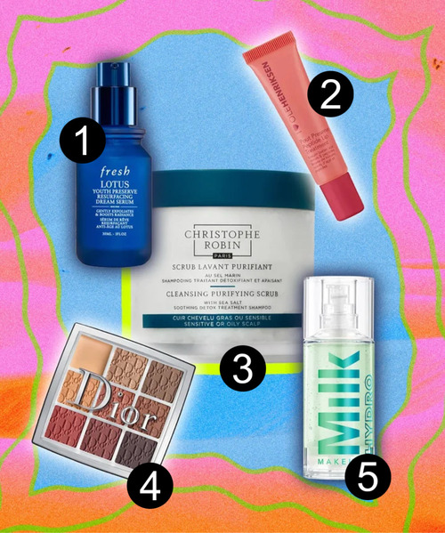

Explora los productos de maquillaje y cuidado de la piel
Haz clic en los números para ver la descripción del producto.

Lista de Productos:
1. FRESH Lotus AHA Resurfacing Gentle Serum
2. OLEHENRIKSEN Pout Preserve Hydrating Peptide Lip Treatment
3. CHRISTOPHE ROBIN Cleansing Purifying Scrub with Sea Salt
4. DIOR BACKSTAGE Eyeshadow Palette
5. MILK MAKEUP Grip Hydrating Makeup Primer